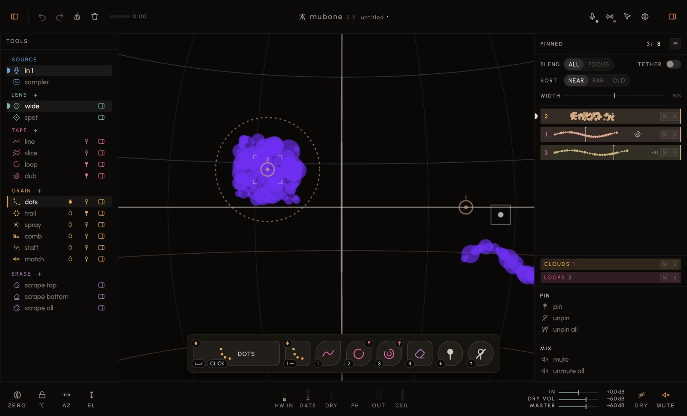
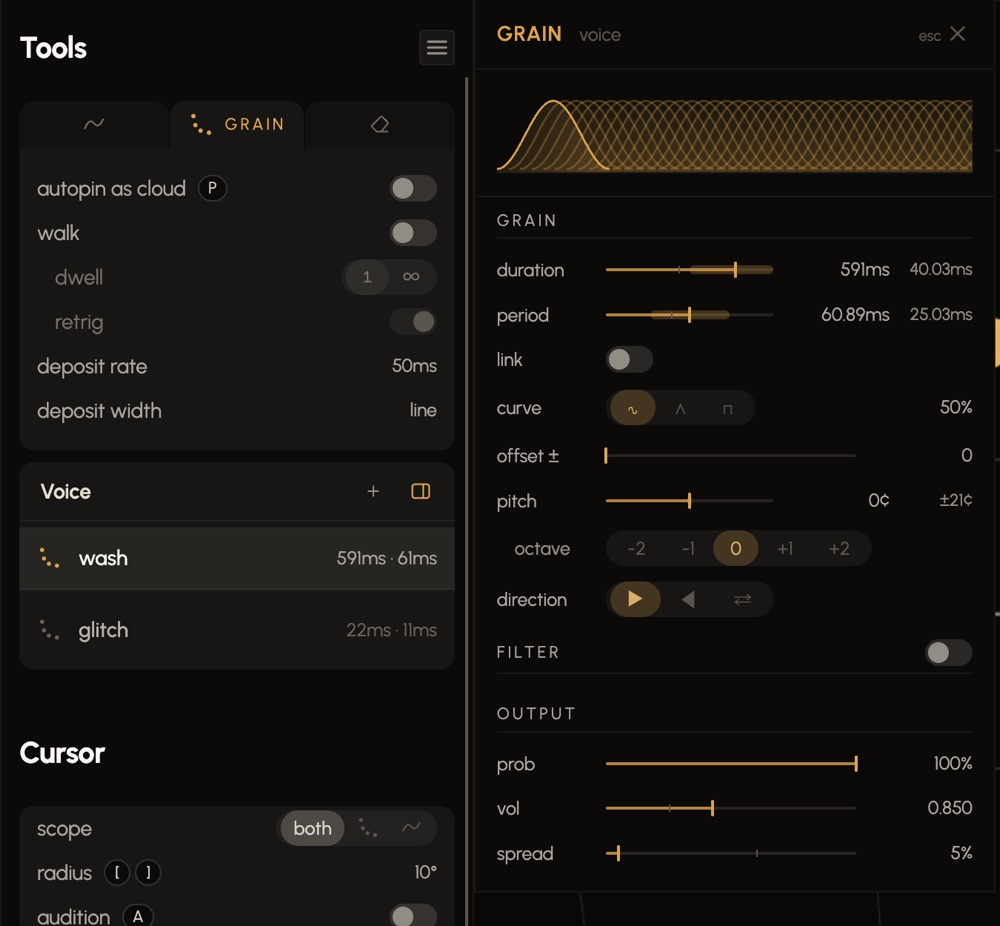

Play into it. What you play is painted on the sphere; the cursor reads it back; what you pin keeps going while you play the next thing.Hover anything in the app: with the ? lit (top right, beside the cog) every tooltip says what the control is and how to use it. This sheet is the rest.
The mic, top right, says what the input is. Set the paint gate in Settings → Audio so the room doesn't paint. If you'll loop, press Measure under Latency once — with the speakers reaching the mic.
The mouse steers the view and the cursor follows it. ⌥ holds the cursor where it is and gives you the pointer; ⌥ again lets it go. The camera button, top right, picks pull, point or sensor.
␣press space and play; press it again to stop. The take is a line on the sphere — tape, played whole when the cursor touches it.
␣ —hold space and play: a mark for each moment, for as long as you hold. Pass the cursor over them and it granulates what is in reach. [ ] set the reach; C turns the cursor off and on.
Stand on a line — hear it loop — and press space: the line is pinned where you are, carrying on from what you hear, and your take layers onto it. On a pinned loop, or on one of its layers, a take layers onto that loop. Anywhere else a take is a line. The ring on a loop's number in the pinned rail is the loop your next take would join. ↓ during a take starts a loop in open space.
↓pins what the cursor is sounding. ⇧Tab opens the mixer — a fader per pin. ↑unpins the selected one. ⌘S saves the piece; nothing saves itself.

Everything on the sphere is one or the other. Scratch sounds only under the cursor. Pinned plays on its own.
Everything you paint lands here. It is silent until the cursor is on it: grain marks in reach are granulated, a line fires when touched. The cursor reads it, the eraser edits it, C turns the cursor off, sweep clears it.
A loop or a cloud. It has a track in the mixer, feeds the house, and keeps going wherever the cursor is. Sweep leaves it alone. Unpin is what stops it — and the material is scratch again, back under the cursor.
A pinned cloud owns its marks: the cursor will not granulate inside it, so pinning never doubles a sound — muted or not. A pinned loop's stroke is still a line: touch it and it fires on top of the loop.
Now — ↓every line the cursor is on becomes a loop, and the grains in reach a cloud; hold it and move to pin a cloud along a path. On release — with autopin on (grain, P), a stroke pins itself the moment you let go. While you record — press ↓during a tape take and the phrase so far loops while you keep recording as an overdub on it; press again for the next layer.
Six tiles, always the same six. The mouse selects, the key plays: click a tile to open its tab, press its key to play it.
C turns it off — it reads nothing, the eye is struck through — and on again. It wears headphones while you audition.
Both on space, told apart by how long you press: a press plays tape and latches — press again to stop; a hold plays grain while you hold, and takes back whatever the press had started. A click on the sphere is the same as space. Each tile shows the voice it plays — wash, or wash* once you have moved a knob off it.
E erases while held. ↓ pins, ↑ unpins the selected pin — hold ↑ extra long to unpin everything.
Bottom-left of every tile: the key, button or note that plays it. Click it, press the new one. Right-click clears it to a dash; click the dash to bind again. A gesture rides inside — long, ×2. The same stickers sit on the rail's rows (P, A, N…) and learn the same way.
Tab shows it. A tab per instrument — tape, grain, erase — then the cursor at its foot. Its ≡ opens Settings → Tools, for what you set once.

slice — the next take is cut into a line per attack, and never layers onto a loop. Off, a take started on a loop or a line layers onto it. dwell — what a line does while the cursor stays on it: once, loop, or grain. retrig — on, a line fired again cuts the pass that is sounding; off, the new one lays over it.
autopin as cloud — a stroke pins itself as a cloud on the path you drew. walk — a touch sets a walker going along the stroke you touched, at the pace you painted it, instead of the cursor reading what is in reach; its dwell and retrig sit under it. deposit rate — the time between marks. deposit width — how wide the marks scatter either side of the line.
by stroke — an erase takes the whole stroke of any mark it touches. depth — how many layers it reaches, newest first. from — top (newest) or bottom (oldest) first.
Each row is a preset, a few of its numbers on the right. Click one and it is the voice. Move a knob and its name wears an asterisk — wash* — until you click it again to go back. + saves the sound on the knobs as a new preset; double-click one of yours to rename it, × to delete it.
The on the Voice line opens every number of the sound beside the rail. Drag a number, or click it and type; double-click puts it back. A band on a line is its spread — drag its edge. esc closes it.
A stroke keeps the voice it was painted with — turn the knobs afterwards and only the next stroke changes. Ride a knob while painting and the sweep is recorded into that stroke, mark by mark, like playing through a pedal.
The foot of the tool rail, always there: how the cursor reads.
scope — what it plays: grains, tape lines, or both. radius — how far it reaches; [ ] or scroll.
The cursor plays what it reads through the live voice sheets instead of as it was baked, so you can try a preset or a knob on what is already there. Nothing is rewritten. Turning it on opens the voice sheet; off puts your voice back, and on again brings the trial back — a compare button. Pin while auditioning and the pin keeps the sound you were hearing.
For grain marks only. mode (N) — everything within the radius, or the k nearest anywhere. depth — how many layers, newest first. k — how many of the marks in reach sound at once; the readout says how many are in reach and how many fire. step — marks in the order they were made instead of at random. soft edge — marks get quieter toward the rim; Settings → Tools → falloff sets how steeply.
Pin while on a line and it becomes a loop. Pin while granulating and the marks in reach become a cloud that keeps granulating there. Both at once, and one press makes both — one undo takes them back.
The selected frame holds it, and it is always the first row. sort says which that is — nearest to the cursor, farthest, or oldest. old holds still while you play.
On: the faders follow the cursor — nearest loudest, the rest handing over by distance. Off: every pin plays at its fader. How smooth the handover is lives in Settings → Pins.
when full — with every slot taken, a new pin is refused (off), or the oldest or the nearest makes room. unpin all lets everything go (↑ held extra long).
clouds and loops, each with its own M and S, and under them all, the master: its M silences every pin and lets them back exactly as you left them. A track's own M and S clear one at a time.
Next to the title. The first number is how many are held — a readout. The boxed one is the most there can be: click and type, or ↑ ↓. The ≡ beside it opens Settings → Pins: how a pin comes in and goes out, and the crossfade.
Everything on the sphere and the sound it was played on — takes, marks, pins, loops, lines, their audio — in one .mubone file. ⌘S saves it. The first time it asks where; after that it's silent. Its name sits beside the version in the top bar, with a dot while something is unsaved.
⇧⌘S always asks, and that file is the piece from then on. Use it to keep a version before you take a set somewhere else.
⌘O opens a piece and replaces what is on the sphere — save first. File → Open Recent holds the last eight; a double-clicked .mubone opens in mubone. ⌘N is an empty piece. An opened piece plays: its loops and clouds come back sounding.
There is no autosave. Closing the window with unsaved work asks once; that prompt is the only net.
The rig: your settings, every tool's voice and presets, the palette's keys, bindings, the sensor calibration you saved, the window layout. All of it survives quitting and relaunching without you doing anything. It is not in the piece — open someone else's piece and your rig stays yours.
Settings → Export · Import → Export writes that rig to a setup file you can carry to another machine or keep as a backup — devices, calibration, bindings, presets, the layout. No music in it.
Reads a setup file back and merges it into what is here rather than replacing it: what the file names changes, what it doesn't leaves alone.
Settings → Reset. Reset all puts every remembered setting back to factory, two clicks. Reset selected clears only the categories you switch on. Neither touches a saved piece or setup file.
mubone.org/sim starts from factory on every new build. Only the Electron app keeps a rig.
Any of these can be moved: click a sticker and press the new key, or use Settings → Keys + MIDI.
Two gestures before a set: the mount calibration (two poses, Settings → Sensors) and zero (`, facing the audience). Neither survives a power cycle.
Nothing is written unless you ⌘S. The prompt when you close the window is the only net. The piece is the music; the rig — devices, keys, presets — is a separate export.
Settings → Audio → Latency → Measure, with the output reaching the mic. Loops land in time because of this number; it's remembered per device pair.
Below the line on the gate meter nothing is painted. It never attenuates. Set it above the room and below your quietest playing.
Sweep (the broom) clears only what isn't pinned — pins keep sounding, and it frees recording memory. Erase all takes everything, pins included.
The bar in the top bar. At full, a new take is refused until you sweep. Watch it in a long set.
The loop keeps running silently. Unmute and it's where it would have been — not at the top. Unpin is the thing that stops it.
speed, pitch and reverse on the tape voice sheet. Speed is tape — the pitch follows it. Pitch is a shift on top that leaves the length alone. step snaps both to semitones, or to octaves and fifths. Moving them changes the NEXT take, never one already on the sphere — audition is how you hear them on what is there.
With tape's start on ends (Settings → Tools), entering a line at its back plays it backwards — and a reversed take, forwards. Approach is the control.
A take plays through once, and only then does the cursor start granulating its marks — until you move away.
Settings → Tools → dub decay, a percentage. While you overdub, everything already in the loop steps down by it at every pass, so the loop is always the last few passes. At 0 the layers stack for ever.
A pill above the palette for a second: the last thing any key, button, pedal, pad, MIDI or OSC message did — slice on · key 4 · long. Ochre not bound or not handled means it arrived and nothing is mapped to it.
The tape tab's fade out switch. On, a loop pinned from then on plays that many passes, each quieter, then unpins itself and its line goes — short loops leave quickly. Off, a loop stays until you unpin it.
Erase a line's tail to shorten it, its head to trim, its middle to split it in two.
mubone.org/sim has no sensor and stereo only, and forgets everything on a new build. The instrument is the Electron app.
mubone 5.11 alpha · the Electron build.